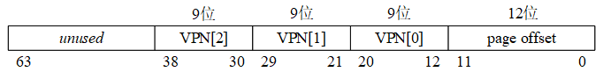
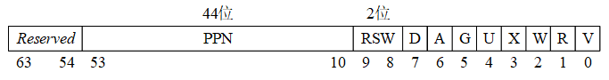
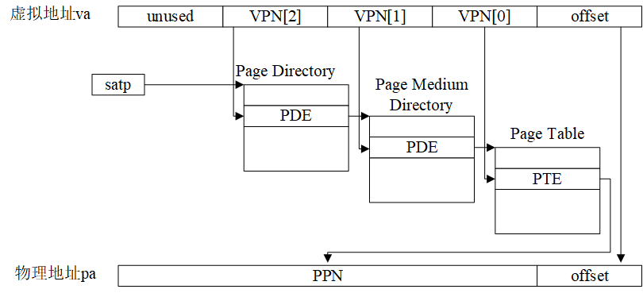
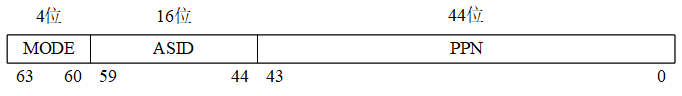

1 系统启动
1.1 内核载入
由于是“代理内核”，PK 并不运行在真正的机器上，Spike 模拟器将其当作一个 ELF 文件载入，所以可以通过 readelf 来看内核的可执行程序。
$ riscv64-unknown-elf-readelf -h ./obj/riscv-pke
ELF Header:
Magic: 7f 45 4c 46 02 01 01 00 00 00 00 00 00 00 00 00
Class: ELF64
Data: 2's complement, little endian
Version: 1 (current)
OS/ABI: UNIX - System V
ABI Version: 0
Type: EXEC (Executable file)
Machine: RISC-V
Version: 0x1
Entry point address: 0x80000548
Start of program headers: 64 (bytes into file)
Start of section headers: 130760 (bytes into file)
Flags: 0x5, RVC, double-float ABI
Size of this header: 64 (bytes)
Size of program headers: 56 (bytes)
Number of program headers: 2
Size of section headers: 64 (bytes)
Number of section headers: 18
Section header string table index: 17
$ riscv64-unknown-elf-readelf -l ./obj/riscv-pke
Elf file type is EXEC (Executable file)
Entry point 0x80000548
There are 2 program headers, starting at offset 64
Program Headers:
Type Offset VirtAddr PhysAddr
FileSiz MemSiz Flags Align
LOAD 0x0000000000001000 0x0000000080000000 0x0000000080000000
0x0000000000003564 0x0000000000003564 R E 0x1000
LOAD 0x0000000000005000 0x0000000080004000 0x0000000080004000
0x0000000000001411 0x00000000000098b8 RW 0x1000
Section to Segment mapping:
Segment Sections...
00 .text .rodata
01 .htif .data .bss
ELF 的文件入口地址是 0x80000548，具有代码段(段首地址是 0x80000000，长度是 0x3564)和数据段(段首地址是 0x80004000，长度是 0x98b8)。
代码段的段首地址是 0x80000000，而 spike 模拟器为程序模拟的内存也以 0x80000000 这个地址为起始地址，所以我们巧妙的避开了在内核态需要有内核页表进行 VA -> PA 的问题。
1.2 内核启动
载入 spike 的内存后，内核的入口地址是 _mentry 汇编函数:
.globl _mentry
_mentry:
# [mscratch] = 0; mscratch points the stack bottom of machine mode computer
csrw mscratch, x0
# following codes allocate a 4096-byte stack for each HART, although we use only
# ONE HART in this lab.
la sp, stack0 # stack0 is statically defined in kernel/machine/minit.c
li a3, 4096 # 4096-byte stack
csrr a4, mhartid # [mhartid] = core ID
addi a4, a4, 1
mul a3, a3, a4
add sp, sp, a3 # re-arrange the stack points so that they don't overlap
# jump to mstart(), i.e., machine state start function in kernel/machine/minit.c
call m_start
_mentry 为内核分配 4KB 大小的内核栈，并调用 m_start。
m_start 会初始化客户机-主机接口和文件接口， 将上一个状态设置为 S 态，并将“退回”到 S 态的函数指针 s_start 写到 mepc 寄存器中(90–93行)，再执行返回进入 s_start(由于上一个状态被设置为了 S 态)。
s_start 会初始化 Sv39 页表、process_pool、VFS 等数据结构，最后载入制定 ELF 文件后调用 schedule() 开始调度进程运行。
2 内存管理
2.1 SV39 三级页表模型




OS 从 SATP 的 PPN 中获得三级页表根目录的物理地址，根据 VPN[3] 找到页表二级目录地址… 找到页表后，根据 VPN[3] 找到 PPN，与 12 位 offset 一同构成 54 位 PA。
除此之外，TLB 被用来加速 VA -> PA 转换(需要在进程切换的时候刷新 SATP 寄存器中 ASID 的值，如果发生进程切换，则 OS 需要调用 SFENCE.VMA 来刷新 TLB)